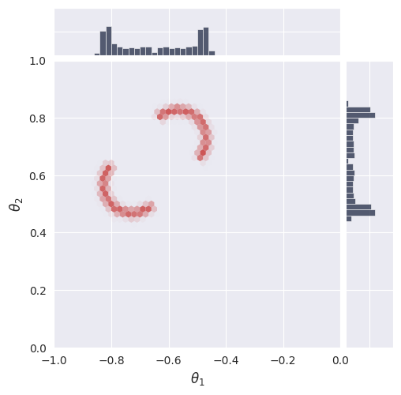
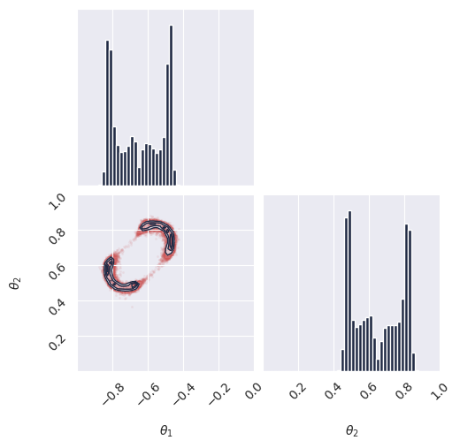
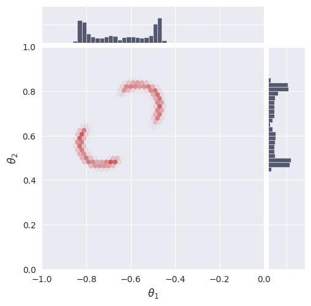
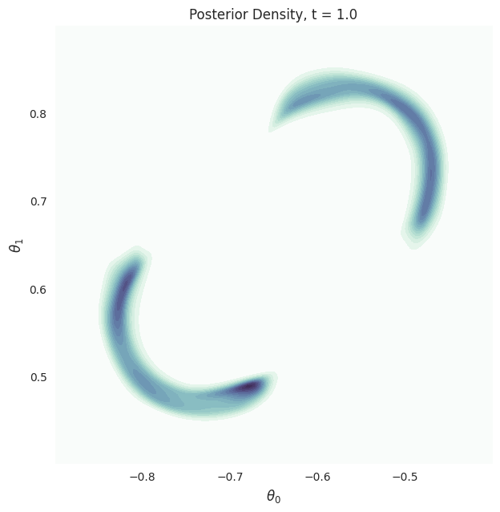

Two Moons Simformer Conditional Flow Matching Example#
This notebook demonstrates conditional flow-matching on the Two Moons task using JAX and Flax.
About Simulation-Based Inference (SBI): SBI refers to a class of methods for inferring parameters of complex models when the likelihood function is intractable, but simulation is possible. SBI algorithms learn to approximate the posterior distribution over parameters given observed data, enabling inference in scientific and engineering domains where traditional methods fail.
The Two Moons Dataset: The Two Moons dataset is a two-dimensional simulation-based inference benchmark designed to test an algorithm’s ability to handle complex posterior distributions. Its posterior is both bimodal (two distinct peaks) and locally crescent-shaped, making it a challenging task for inference algorithms. The primary purpose of this benchmark is to evaluate how well different methods can capture and represent multimodality and intricate structure in the posterior.
Purpose of This Notebook: This notebook trains and evaluates a Simformer flow-matching model on the Two Moons task. The goal is to assess the model’s ability to learn and represent a non-trivial posterior distribution with both global (bimodal) and local (crescent-shaped) complexity.
Table of Contents#
Section |
Description |
|---|---|
1. Introduction & Setup |
Overview, environment, device, autoreload |
2. Task & Data Preparation |
Define task, visualize data, create datasets |
3. Model Configuration & Definition |
Load config, set parameters, instantiate model |
4. Training |
Train or restore model, manage checkpoints |
5. Evaluation & Visualization |
Visualize loss, sample posterior, compute log prob |
6. Animations |
Create and display GIFs of results |
## 1. Introduction & Setup#
In this section, we introduce the problem, set up the computational environment, import required libraries, configure JAX for CPU or GPU usage, and enable autoreload for iterative development. Compatibility with Google Colab is also ensured.
[1]:
# Check if running on Colab and install dependencies if needed
try:
import google.colab
colab = True
except ImportError:
colab = False
if colab:
# Install required packages and clone the repository
%pip install "gensbi_examples[cuda12] @ git+https://github.com/aurelio-amerio/GenSBI-examples"
!git clone https://github.com/aurelio-amerio/GenSBI-examples
%cd GenSBI-examples/examples/sbi-benchmarks/two_moons
[2]:
# load autoreload extension
%load_ext autoreload
%autoreload 2
[3]:
import os
# select device
os.environ["JAX_PLATFORMS"] = "cuda"
# os.environ["JAX_PLATFORMS"] = "cpu"
## 2. Task & Data Preparation#
In this section, we define the Two Moons task, visualize reference samples, and create the training and validation datasets required for model learning. Batch size and sample count are set for reproducibility and performance.
[4]:
restore_model=True
train_model=False
[5]:
import orbax.checkpoint as ocp
# get the current notebook path
notebook_path = os.getcwd()
checkpoint_dir = os.path.join(notebook_path, "checkpoints")
os.makedirs(checkpoint_dir, exist_ok=True)
[6]:
import matplotlib.pyplot as plt
import jax
import jax.numpy as jnp
from flax import nnx
from numpyro import distributions as dist
import numpy as np
/home/zaldivar/miniforge3/envs/gensbi/lib/python3.12/site-packages/tqdm/auto.py:21: TqdmWarning: IProgress not found. Please update jupyter and ipywidgets. See https://ipywidgets.readthedocs.io/en/stable/user_install.html
from .autonotebook import tqdm as notebook_tqdm
[7]:
from gensbi.utils.plotting import plot_marginals
[8]:
from gensbi_examples.tasks import TwoMoons
task = TwoMoons()
[9]:
# reference posterior for an observation
obs, reference_samples = task.get_reference(num_observation=8)
[10]:
# plot the 2D posterior
plot_marginals(np.asarray(reference_samples, dtype=np.float32), gridsize=50,range=[(-1,0),(0,1)], plot_levels=False, backend="seaborn")
plt.show()

[11]:
# make a dataset
nsamples = int(1e5)
[12]:
# Set batch size for training. Larger batch sizes help prevent overfitting, but are limited by available GPU memory.
batch_size = 4096
# Create training and validation datasets using the Two Moons task object.
train_dataset = task.get_train_dataset(batch_size)
val_dataset = task.get_val_dataset()
# Create iterators for the training and validation datasets.
dataset_iter = iter(train_dataset)
val_dataset_iter = iter(val_dataset)
## 3. Model Configuration & Definition#
In this section, we load the model and optimizer configuration, set all relevant parameters, and instantiate the Simformer model. Edge masks and marginalization functions are used for flexible inference and posterior estimation.
[13]:
from gensbi.recipes import SimformerFlowPipeline
[14]:
import yaml
# Path to the Simformer flow-matching configuration file.
config_path = f"{notebook_path}/config/config_flow_simformer.yaml"
[15]:
# Extract dimensionality information from the task object.
dim_obs = task.dim_obs # Number of parameters to infer
dim_cond = task.dim_cond # Number of observed data dimensions
dim_joint = task.dim_joint # Joint dimension (for model input)
node_ids = jnp.arange(dim_joint) # Node indices for model graph
[16]:
pipeline = SimformerFlowPipeline.init_pipeline_from_config(
train_dataset,
val_dataset,
dim_obs,
dim_cond,
config_path,
checkpoint_dir,
)
## 4. Training#
In this section, we train the Simformer model using the defined optimizer and loss function, or restore a pretrained model from disk if available. Training is managed with early stopping and learning rate scheduling to improve efficiency and prevent overfitting. Checkpoints are saved for reproducibility and future evaluation.
[17]:
if restore_model:
print(f"Restoring model from {checkpoint_dir}")
pipeline.restore_model(experiment_id=3)
if train_model:
print(f"Training model...")
loss_array, val_loss_array = pipeline.train(rngs=nnx.Rngs(0))
WARNING:absl:CheckpointManagerOptions.read_only=True, setting save_interval_steps=0.
WARNING:absl:CheckpointManagerOptions.read_only=True, setting create=False.
WARNING:absl:Given directory is read only=/home/zaldivar/Documents/Aurelio/Github/GenSBI-examples/examples/sbi-benchmarks/two_moons/flow_simformer/checkpoints
WARNING:absl:CheckpointManagerOptions.read_only=True, setting save_interval_steps=0.
WARNING:absl:CheckpointManagerOptions.read_only=True, setting create=False.
WARNING:absl:Given directory is read only=/home/zaldivar/Documents/Aurelio/Github/GenSBI-examples/examples/sbi-benchmarks/two_moons/flow_simformer/checkpoints/ema
Restoring model from /home/zaldivar/Documents/Aurelio/Github/GenSBI-examples/examples/sbi-benchmarks/two_moons/flow_simformer/checkpoints
Restored model from checkpoint
## 5. Evaluation & Visualization#
In this section, we evaluate the trained Simformer model by visualizing training and validation loss curves, sampling from the posterior, and comparing results to reference data. We also compute and visualize the unnormalized log probability over a grid to assess model calibration and density estimation. These analyses provide insight into model performance and reliability.
[18]:
if train_model:
plt.plot(loss_array, label="train loss")
plt.plot(val_loss_array, label="val loss")
plt.xlabel("steps")
plt.ylabel("loss")
plt.legend()
plt.show()
### Section 5.1: Posterior Sampling#
In this section, we sample from the posterior distribution using the trained model and visualize the results. Posterior samples are generated for a selected observation and compared to reference samples to assess model accuracy.
[19]:
# we want to do conditional inference. We need an observation for which we want to ocmpute the posterior
def get_samples(idx, nsamples=10_000, use_ema=False, key=None):
observation, reference_samples = task.get_reference(idx)
true_param = jnp.array(task.get_true_parameters(idx))
if key is None:
key = jax.random.PRNGKey(42)
time_grid = jnp.linspace(0,1,100)
samples = pipeline.sample(key, observation, nsamples, use_ema=use_ema, time_grid=time_grid)
return samples, true_param, reference_samples
[20]:
samples, true_param, reference_samples = get_samples(8, int(1e5))
### Section 5.2: Visualize Posterior Samples#
In this section, we plot the posterior samples as a 2D histogram to visualize the learned distribution and compare it to the ground truth.
[21]:
from gensbi.utils.plotting import plot_marginals, plot_2d_dist_contour
[22]:
plot_marginals(samples[-1], plot_levels=False, gridsize=50, range=[(-1., 0), (0, 1.)])
plt.show()
# check how we set the ranges in the seaborn plot, it seems wrong
plot_marginals(samples[-1], plot_levels=False, backend="seaborn", gridsize=50, range =[(-1., 0), (0, 1.)])
# plt.text(1.05, 1.05, f"t = {1.0}", transform=plt.gca().transAxes)
plt.show()
<Figure size 640x480 with 0 Axes>


### Section 5.3: Compute Unnormalized Log Probability#
In this section, we compute the unnormalized log probability of the posterior over a grid of parameter values. This allows us to visualize the density and evaluate the calibration of the model.
[23]:
grid_size = 300
theta1 = jnp.linspace(-0.9, -0.4, grid_size)
theta2 = jnp.linspace(0.4, 0.9, grid_size)
x_1 = jnp.meshgrid(theta1, theta2)
x_1 = jnp.stack([x_1[0].flatten(), x_1[1].flatten()], axis=1)
observation, reference_samples = task.get_reference(8)
[24]:
time_grid = jnp.linspace(1,0,100)
p_ = pipeline.compute_unnorm_logprob(x_1, observation, step_size=0.01, use_ema=True, time_grid=time_grid)
[40]:
x = theta1
y = theta2
Z = np.exp(np.array(p_.reshape((p_.shape[0], grid_size, grid_size))))
[41]:
plot_2d_dist_contour(x,y,Z[-1], levels=None)
plt.title("Posterior Density, t = 1.0")
plt.xlabel(r"$\theta_0$", fontsize=12)
plt.ylabel(r"$\theta_1$", fontsize=12)
plt.show()

### 5.4. Animations#
In this section, we create and display animations of posterior samples and density contours over time. These visualizations illustrate the evolution of the learned distribution during the sampling process, providing dynamic insight into model behavior and convergence.
[42]:
import imageio.v3 as imageio
import io
from tqdm import tqdm
[43]:
# samples
images = []
for i in tqdm(range(len(samples))):
fig, axes = plot_marginals(
samples[i],
plot_levels=False,
gridsize=50,
range=[(-1.0, 0), (0, 1.0)],
backend="seaborn",
)
# manually set the ticks to make a prettier plot
axes[0,0].set_ylim(0,6)
axes[0,0].set_yticks([5])
axes[1,1].set_xlim(0,6)
axes[1,1].set_xticks([5])
axes[1,1].text(0, 1.03, f"t = {(i+1)/len(samples):.2f}", transform=plt.gca().transAxes)
buf = io.BytesIO()
plt.savefig(buf, format="png", dpi=100)
buf.seek(0)
image = imageio.imread(buf)
buf.close()
if i == 0:
images = []
images.append(image)
plt.close()
1%| | 1/100 [00:00<00:26, 3.70it/s]100%|██████████| 100/100 [00:29<00:00, 3.42it/s]
[44]:
# repeat the last frame 10 times to make the gif pause at the end
images += [images[-1]] * 20
[45]:
imageio.imwrite(
'animated_plot_samples_simformer.gif',
images,
duration=5000/len(images),
loop=0 # 0 means loop indefinitely
)

[46]:
images = []
for i in tqdm(range(len(samples))):
fig, ax = plot_2d_dist_contour(x,y,Z[i], levels=None)
plt.title(f"Posterior Density, t = {(i+1)/len(samples):.2f}", fontsize=14)
plt.xlabel(r"$\theta_0$", fontsize=12)
plt.ylabel(r"$\theta_1$", fontsize=12)
buf = io.BytesIO()
plt.savefig(buf, format="png", bbox_inches='tight', dpi=100)
buf.seek(0)
image = imageio.imread(buf)
buf.close()
if i == 0:
images = []
images.append(image)
plt.close()
2%|▏ | 2/100 [00:00<00:12, 7.58it/s]100%|██████████| 100/100 [00:15<00:00, 6.53it/s]
[47]:
# repeat the last frame 10 times to make the gif pause at the end
images += [images[-1]] * 20
[48]:
imageio.imwrite(
'animated_plot_posterior_simformer.gif',
images,
duration=5000/len(images),
loop=0 # 0 means loop indefinitely
)